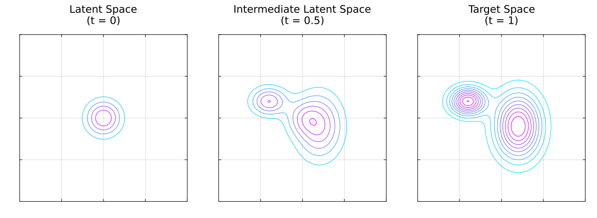

Normalizing Flows
Normalizing Flows (NFs) [14] are generative models that, that unlike most generative models, its transtion between latent to target data spaces is done via a determistic velocity field. Moreover, since this velocity field is deterministic the transition beteen latent and target spaces is invertible. Like Diffusion Models (DMs), the latent space and target space are of equal dimensions, unlike Variational Autoencoders (VAEs) that allow smaller or larger dimensional latent spaces.
Once a NF is trained, its velocity field can be used as a generative model. This generation process is possible because the trained velocity field begins with statistically independent latent variables, allowing us to simply seed the network with pure random noise to synthesize completely new data.

Velocity Field
The core component of a Continuous Normalizing Flow (CNF) is a velocity field, typically parameterized by a trained Artificial Neural Network (ANN), that governs the transformation of randomly sampled data from a simple latent distribution (e.g., isotropic Gaussian noise) to a target distribution. Because this velocity field defines a deterministic path, mapping data between the latent and target spaces is completely invertible. Encoding and decoding will yield the exact original data, provided a sufficiently accurate numerical integrator is used.
Mapping data between the latent and target spaces entails solving a first-order Ordinary Differential Equation (ODE). Consequently, executing a trained CNF requires a numerical integrator, such as the fourth-order Runge-Kutta method. Mathematically, this is expressed as:
\[ \frac{\mathrm{d}}{\mathrm{d} t} x (t) = v_\theta \left( x(t), t \right),\]
where $v_\theta $ represents the velocity field parameterized by the trained weights $\theta$. The integration boundaries map the respective spaces:
\[ x (0) \sim \mu_\text{latent} \quad \text{and} \quad x (1) \sim \mu_\text{target},\]
where $\mu_\text{latent}$ and $\mu_\text{target}$ denote the probability distributions of the latent and target spaces, respectively.
Flow Matching
While it is necessary to solve a first order ODE to use a trained CNF, during training it is possible to bypass the need of a numerical integrator, thus, substantially reducing code complexity and computational cost. This is possible using a technique known as Flow Matching (FM) [15].
Instead of backpropagating gradients through an expensive ODE solver over multiple time steps, Flow Matching formulates a regression objective that directly matches the model's velocity field $v_\theta(x, t)$ to a known, target vector field $u_t(x)$.
The Ideal Objective
If we had access to the true, time-dependent vector field $u_t(x)$ that generates the target distribution from the latent distribution, we could train the neural network weights $\theta$ by minimizing the expected $L_2$ error:
\[\mathcal{L}_{\text{FM}}(\theta) = \mathbb{E}_{t \sim \mathcal{U}(0, 1), \, x \sim p_t(x)} \left[ \Vert{} v_\theta(x, t) - u_t(x) \Vert{}^2 \right],\]
where $t$ is uniformly sampled between $0$ and $1$, and $p_t(x)$ represents the intermediate probability density along the path. However, this ideal objective is intractable in practice because both the true vector field $u_t(x)$ and the marginal density path $p_t(x)$ are unknown and depend on the complex target distribution.
Conditional Flow Matching (CFM)
To circumvent this limitation, FM breaks down the complex global problem into simpler, data-conditioned subproblems. By conditioning the path on a specific data sample $x_1 \sim \mu_\text{target}$ and a latent sample $x_0 \sim \mu_\text{latent}$, we define a conditional probability path $p_t(x \vert{} x_0, x_1)$ and a conditional vector field $u_t(x \vert{} x_0, x_1)$.
Crucially, it can be proven that the gradients of the conditional objective are equivalent to the gradients of the intractable global objective. This yields the tractable Conditional Flow Matching (CFM) loss:
\[\mathcal{L}_{\text{CFM}}(\theta) = \mathbb{E}_{t, x_0, x_1, x} \left[ \Vert{} v_\theta(x, t) - u_t(x \vert{} x_0, x_1) \Vert{}^2 \right],\]
where $t \sim \mathcal{U}(0, 1) $, $\ x_0 \sim \mu_\text{latent}$, $\ x_1 \sim \mu_\text{target} \ $ and $ \ x \sim p_t(x \vert{} x_0, x_1)$.
Optimal Transport (Linear) Paths
A standard and highly efficient choice for the conditional path is the Optimal Transport (OT) displacement map, which defines straight, constant-velocity trajectories from the noise to the data. Assuming an isotropic Gaussian latent distribution $\mu_\text{latent} = \mathcal{N}(0, I)$, the conditional path and its corresponding velocity field can be written in closed-form as:
\[\begin{gather*} x_t = (1 - t)x_0 + tx_1 \implies p_t(x \mid x_0, x_1) = \mathcal{N}\left(x; \, tx_1, \, (1-t)^2I\right), \end{gather*}\]
hence
\[ u_t(x | x_0, x_1) = x_1 - x_0.\]
Substituting the path $x = (1 - t)x_0 + tx_1$ and this conditional vector field directly into the conditional loss gives a simple, simulation-free objective:
\[ \mathcal{L}_{\text{OT-CFM}}(\theta) = \mathbb{E}_{t, \, x_0, \, x_1} \left[ \Vert{} v_\theta\big((1 - t)x_0 + tx_1, \, t\big) - (x_1 - x_0) \Vert{}^2 \right].\]
During training, optimization relies entirely on evaluating simple algebraic expressions. By swapping out the sequential ODE integration loop for an unrolled, single-step mean squared error objective, training scales efficiently to high-dimensional datasets.